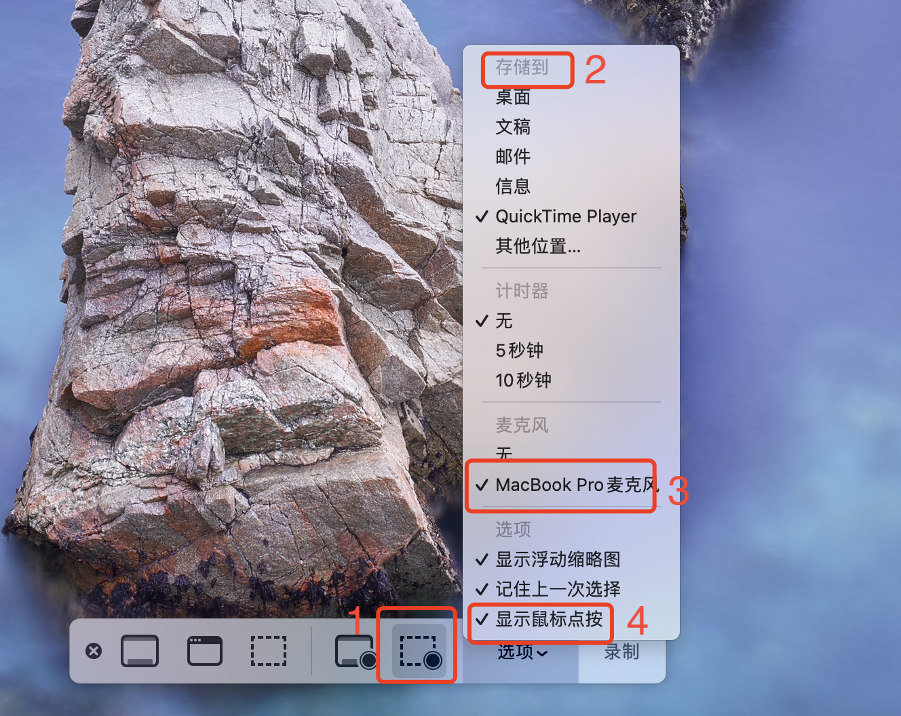
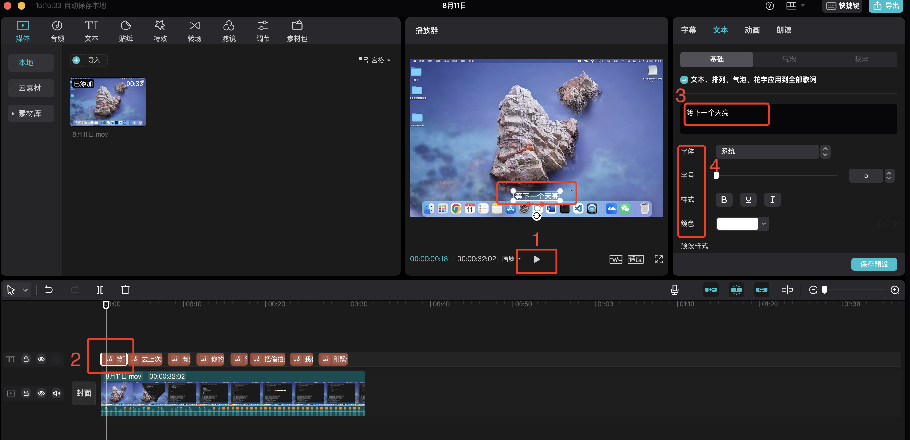
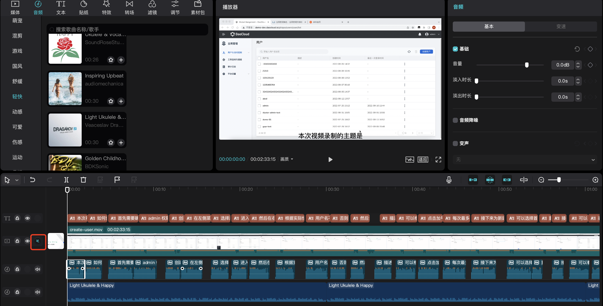
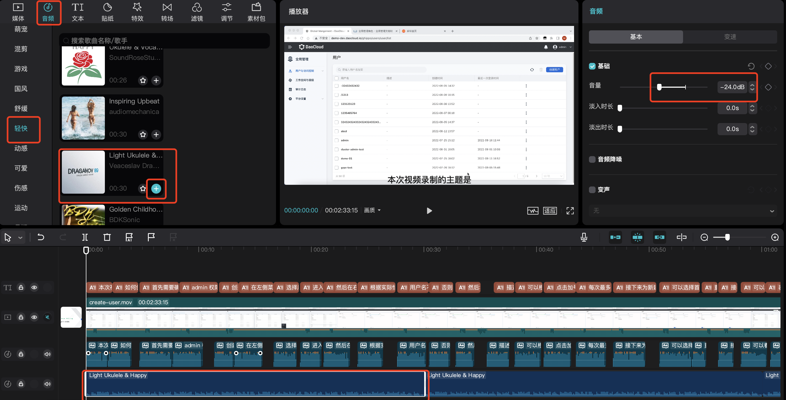
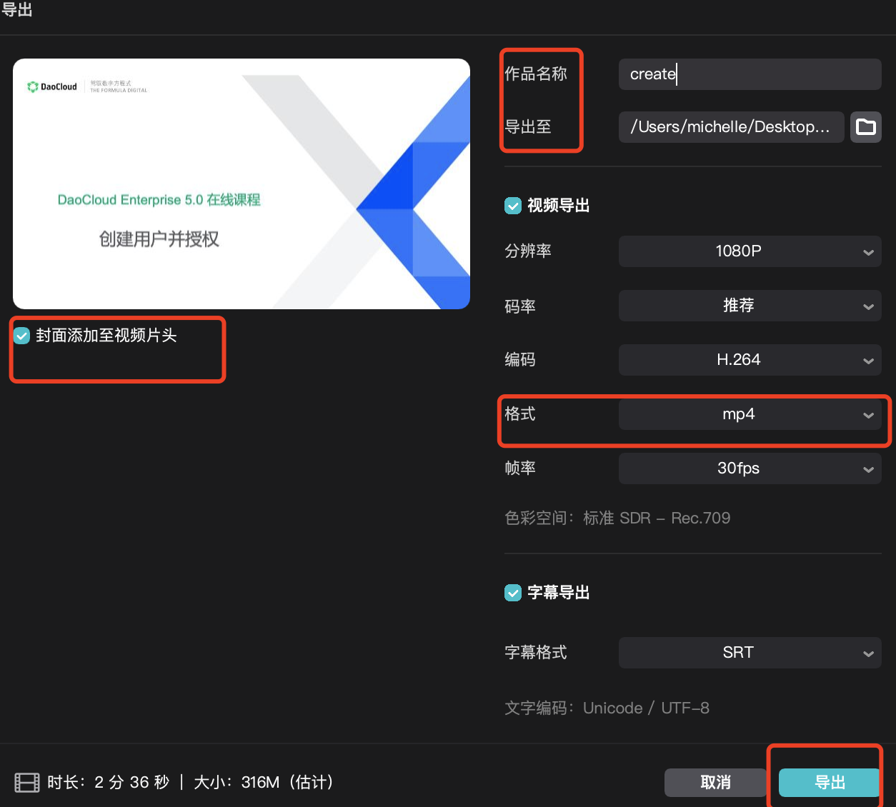

视频录制和剪辑教程¶
本文以 MacOS 上的 QuickTime 和剪映为例，简要说明视频录制和剪辑的大致步骤。
准备工具¶
录屏软件只要能够：
- 导出视频无水印
- 支持录入麦克风声音，即可用来录制产品操作视频。
因此，你可以使用自己常用的录屏软件，也可以使用下面推荐的软件：
-
MacOS: QuickTime Player
这是系统自带的录屏软件，无需下载。 优点是不限制录屏时长，视频背景无水印，可以录入麦克风声音，且简单易用。 缺点是功能略显单薄，但对于录制产品操作视频而言足够了。
Tip
QuickTime Player 默认不支持录入系统声音。 如需录制系统声音，需要安装插件 Soundflower。
-
Windows: Bandicam
适用于 Windows 系统的录屏软件，功能强大。 免费版最长可录制 10 分钟且导出视频会有水印，使用其他版本可以避免这个问题。
-
MacOS/Windows：OBS Studio
这是一款开源的录屏软件，功能强大，可以跨平台使用。
-
剪辑软件：剪映或其海外版 CapCut。 进阶之后，可以试试 After Effects 和 Adobe Premiere Pro
-
当然一名专业的视频剪辑师，只有上述几个软件是不够的，海量自由的素材库、关键帧等高级运用技巧、美感和节奏的把控、定向垂直领域投放才是说话的底气。
言归正传，本文只介绍简单的操作视频制作步骤，供大家参考和统一风格。
开场白与结束语¶
使用统一的开场白：“本次视频录制的主题是如何 xxx”。例如：“本视频介绍的主题是如何接入集群。”
使用统一的结束语：“以上就是本次视频的全部内容，感谢您的观看“
录制期间需要自己解说操作，作为旁白。普通话不标准没关系，后期会使用软件替换。录制期间自己解说主要为了便于软件识别与转换， 无需手动添加字幕、无需大量调节音频，可以省去不少时间。咬字清楚、节奏恰当可以提高软件识别/转换的准确度，减少后期的手动调整量。
录制视频¶
鉴于公司内部大多数同事使用的都是 MacBook，下面就以 Mac 自带的 QuickTime Player 为例来说明如何录制产品操作视频。
-
新建屏幕录制
右键点击 QuickTime Player 图标，选择 新建屏幕录制

-
调整录屏设置
- 选择 录制所选部分 ，下图中的红框 1，不要录入与视频无关的标题栏、底部导航栏等内容，
- 自定义录屏文件的存储位置，下图中的红框 2
- 选择麦克风，外接设备或系统麦克风均可，下图中的红框 3
- 选择 显示鼠标点按 ，下图中的红框 4

-
开始/结束录制
-
调整好录屏设置后，点击 录制 开始录屏。
Tip
录屏开始时记得说开场白、期间需要自己解说操作，以及结束时别忘了说结束语。
录屏时要保持 浏览器全屏 ，不要把杂七杂八的内容录进去。

查看屏幕右上方的状态栏是否出现如下标志，如果出现则说明系统正在录屏。
-
想要结束录制时，点击上图中的圆圈即可退出录屏。
-
添加和修改字幕¶
录屏好视频之后，需要为视频添加字幕。
剪映是一款跨平台的音视频剪辑软件，支持智能识别音屏并自动添加字幕。 使用剪映的智能识别音屏和自动添加字幕功能后，我们只需要对自动生成的字幕稍作调整即可，可以节省不少时间。
-
导入视频文件
在图示界面上点击 导入 ，选择刚才录制好的文件进行导入：
-
将视频添加到轨道
点击 + 将视频添加到轨道。

-
智能识别音频与字幕
在底部的操作区中，右键点击视频，选择 识别字幕/歌词 ：

-
调整字幕片段
音频识别完成后，系统会自动根据识别结果添加字幕。在右上角的操作区，点击播放按钮（下图中的红框 1），查看整体效果。如有字幕需要调整，可参考如下操作：
- 选择需要调整的字幕，下图中的红框 2
- 如需调整字幕出现的时间点，直接在下方的操作区前后拖动所选中的字幕片段即可，下图中的红框 2
- 如有文字识别错误，可在文本框进行调整，下图中的红框 3
- 字幕样式：颜色统一使用黑色，其他使用默认设置
- 字幕在页面中的位置：统一放在页面底部中间位置

添加和修改音频¶
-
关闭原声
添加音频之前，为避免干扰，需要关闭视频中的原声。关闭原声之后，最终的视频中就听不到自己旁白的声音了 。

-
添加配音
调整完字幕之后，选中所有字幕片段，在右上角的操作区选择 朗读 → 知性女声 → 开始朗读 。

-
调节音频
朗读结束后，系统会自动生成一个音频轨道，根据需要对音频片段进行调整即可。
音频的音量使用默认值即可，无需修改。
-
添加背景轻音乐
在左上角的工作区，选择 音频 → 轻快 → Light Ukulele ，点击 + 将该背景音添加到轨道，将背景音的音量调节为 -24.0 db 或更低。

Tip
剪映识别中文语音，CapCut 识别英文语音。 在 CapCut 中，你可以选择：
- American Female 作为 text-to-speech 语音
- Light Ukulele & Happy 作为背景音乐
-
调整背景音使其符合视频时长
如果背景音太短，可以选中第一段背景音通过 复制粘贴 延长背景音。如果最后一段背景音超出了视频长度，将标志线拉到视频结尾， 选中最后一段背景音，选择 分割 ，然后将多余的背景音删除即可。
封面和封底¶
字幕、音频、背景音都调整好之后，在视频前选择 封面 → 本地 ，添加本地封面，并进行适当的编辑之后，点击 完成设置 即可。
所有 DCE 5.0 的操作视频都使用统一的封面模板，只需更改主题文字即可。

- 下载封面 PPT：在 PPT 中修改标题，然后导出为图片
- 下载中文封底 16:9
- 下载中文封底 16:10
- 下载中英双语封底视频
{kind=link}
{kind=link}
导出视频¶
调整完所有字幕后，在右上角点击 导出 ，勾选 封面添加至视频片头 ，填写文件名、存储位置， 选择导出格式为 mp4 ，其余选项使用默认值即可，最后点击 导出 即可。

至此，录制视频和添加字幕就完成了，可以自己再完整地观看一遍。
上传和发布¶
视频确认没问题之后就可以上传到 UCloud 对象存储，你会拿到一个 https:// 开头的链接。
然后在 Markdown 中使用以下语法，发布到视频中心。
<div class="responsive-video-container">
<video controls src="https://harbor-test2.cn-sh2.ufileos.com/docs/videos/create-pipeline.mp4" preload="metadata" poster="images/amamba-pipeline.png"></video>
</div>